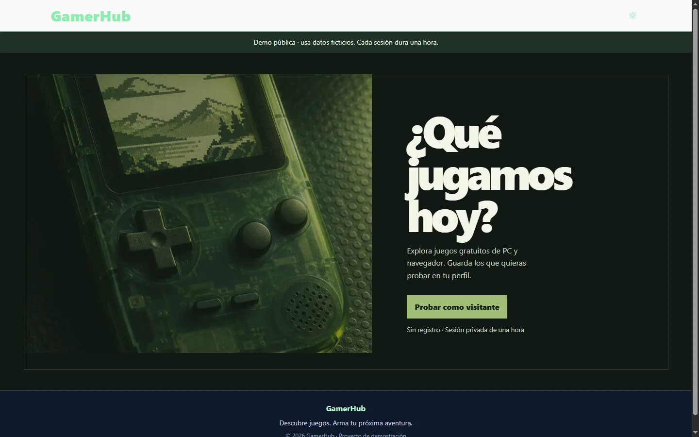
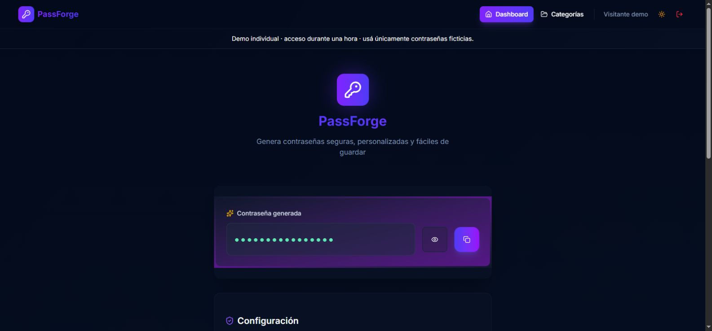

01 / SOPORTE / IA APLICADA
01 / SOPORTE / IA APLICADAHelpDesk IA
↗ReactCloudflare WorkersD1
Tickets, notas y cambios de estado en un espacio privado por visitante.
FULL STACK DEVELOPER
Desarrollo interfaces, APIs y automatizaciones. Responsable de IT en Talking desde 2020.
TRABAJO SELECCIONADO
01 / SOPORTE / IA APLICADAReactCloudflare WorkersD1
Tickets, notas y cambios de estado en un espacio privado por visitante.

03 / CATÁLOGO / COMUNIDADReactCloudflare WorkersD1
Catálogo de FreeToGame y favoritos independientes por perfil.

02 / GENERACIÓN / ORGANIZACIÓNNext.jsTypeScriptPrismaBetter Auth
Generación con Web Crypto y registros separados por sesión.
 04 / TASK API
04 / TASK APIHelpDesk IA, PassForge y GamerHub usan backends reales. Task API es una vista interactiva.
Todos los repositorios ↗EXPERIENCIA
IT Lead @ Talking2020 — presente
Desarrollo herramientas internas, integro APIs y automatizo procesos operativos. También despliego y mantengo servicios con Linux, Docker y Nginx.
03 / SIGUIENTE CONVERSACIÓN
¿Buscas un developer para tu equipo?
Cuéntame sobre el puesto y qué necesitan construir.